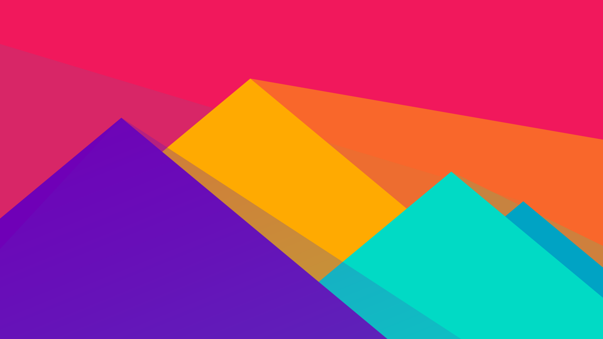

<div class="my-container">
  <article fxLayout="row" fxLayoutAlign="center center">
    <mat-card class="my-card">
      <mat-card-header>
        <div mat-card-avatar class="header-card-image"></div>
        <mat-card-title>
          <a routerLink="/about-me">تست عنوان مطالب سایت شخصی من بازم تست</a>
        </mat-card-title>
        <mat-card-subtitle>تاریخ ارسال: 1397/03/08</mat-card-subtitle>
      </mat-card-header>
      
      <mat-card-content>
        <p>
          لورم ایپسوم متن ساختگی با تولید سادگی نامفهوم از صنعت چاپ و با استفاده از طراحان گرافیک است. چاپگرها و متون بلکه روزنامه
          و مجله در ستون و سطرآنچنان که لازم است و برای شرایط فعلی تکنولوژی مورد نیاز و کاربردهای متنوع با هدف بهبود ابزارهای
          کاربردی می باشد. کتابهای زیادی در شصت و سه درصد گذشته، حال و آینده شناخت فراوان جامعه و متخصصان را می طلبد تا با
          نرم افزارها شناخت بیشتری را برای طراحان رایانه ای علی الخصوص طراحان خلاقی و فرهنگ پیشرو در زبان فارسی ایجاد کرد.
          در این صورت می توان امید داشت که تمام و دشواری موجود در ارائه راهکارها و شرایط سخت تایپ به پایان رسد وزمان مورد
          نیاز شامل حروفچینی دستاوردهای اصلی و جوابگوی سوالات پیوسته اهل دنیای موجود طراحی اساسا مورد استفاده قرار گیرد.
        </p>
      </mat-card-content>
      <mat-card-actions class="go-to-more" fxFlex="row" fxLayoutAlign="center">
        <button mat-raised-button color="accent" [class.mat-elevation-z4]="true">
          <a routerLink="">بریم ادامه مطلب!</a>
        </button>
      </mat-card-actions>
    </mat-card>
  </article>
</div>